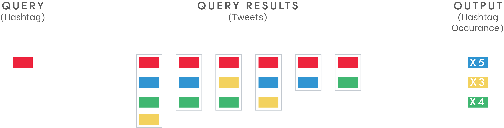

tl;dr:
We developed Hashtag Inspector – a working Android app to check everything related to a Twitter hashtag – within a 10-week time frame for a course at University of Bremen. It shows all the real-time trending hashtag, relevant hashtags and tweets to the selected hashtag, and the overall sentiment of the hashtag.
Roles:
UI Designer
Front-end & Middleware Developer
- Dev. Process
- Inspiration
- System Design
- Interface Design
Development Process

Inspiration
Thanks to the precise ad curation on social media nowadays, my Facebook newsfeed was full of articles and marketing materials about SEO (search-engine optimization), especially about keyword research tools and platforms, after I had a deep-talk with a friend about it. In a nutshell, the tool provides insights into how a keyword is performing on search engines like Google or Youtube. Interestingly, the tool also shows a list of suggested keywords relevant to the entered keyword, which triggered my curiosity: “How did the algorithm figure out that these keywords are relevant to one another?”

On the same day, I was talking to my friend about the like-baiting strategies of influencers, and one of the effective ways is to bully the hashtag system using a lot of hashtags relevant or similar to one another. I, once again, asked myself, “Is there an algorithm to browse all the keywords that are relevant to each other?”
I, with those questions in my mind, scribbled and doodled out an algorithm to gather hashtags relevant to a hashtag, and it turned out to be simpler than I expected.
System Design
Considering the amount of time we had, we decided to stick to the MVP and keep it as simple as possible:
The back-end of the app consists of a Twitter API (Twitter4j, to query tweets), a sentiment analysis module (Microsoft Text Analytics, to detect the sentiment of the queried tweets), and a database (SQLite) to store the previous queries.
Interface Design
Although the UI was not the focus of the course and we didn't want to spend too much time on making it fancy, I still decided to go with a proper design workflow and quickly created the pixel-perfect mock-up in less than half an hour. The color scheme was that from Twitter - at least we didn’t use the default green-y color scheme!

I tested the mock-up with a couple of friends and received really positive feedback, yet still had the chance to discover quite a few possible improvements that I can make to the UI.
According to most of the testers, the first element they looked at was the circular search button on the bottom of the screen, which was supposed to be disabled at first and will only be enabled once the user has entered something in the search field on the top of the screen. The search field – which was expected to catch the first attention – became the most voted second-choice. The detail was not that much of an irritation, but if a problem is discovered and it doesn’t take that much time to fix, why wouldn’t I tackle it?
I, then, decided to “enable” the search button right from the beginning, and its function in that state was to change the state of the search field to “focused”. Once there is something in the search field, the search button will redirect the user to the search result. As a result, the most highlighted element was then clickable, which not only met the user’s expectations and intentions but also kept the user flow unchanged.